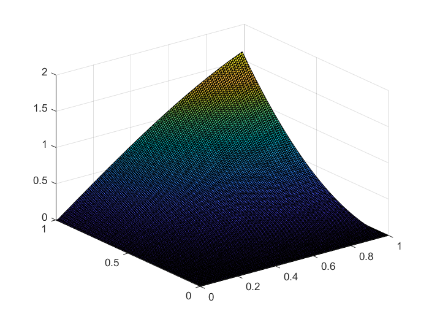

My research focus is in numerical approximations for partial differential equations. During my Ph.D. research, I focused on the development of finite element methods, specifically, saddle point least squares and Petrov-Galerkin formulations for elliptic problems that exhibited boundary layers. The two classes of problems that I focused on were reaction-diffusion and convection-diffusion. For these problems, I became familiar with multigrid and multilevel methods for preconditioning purposes. In the convection-diffusion case, I also built familiarity with stabilization methods as this problem is notorious for issues with standard techniques.
My current research focus is in the tensor train decomposition. Specifically, I am working with various approaches of parallel constructions of a tensor train cross approximation which is efficient to implement. A nice piece that I have found interesting is the ability of TT-Cross to be extremely low access, which can greatly extend the problem size that is feasible to work with.